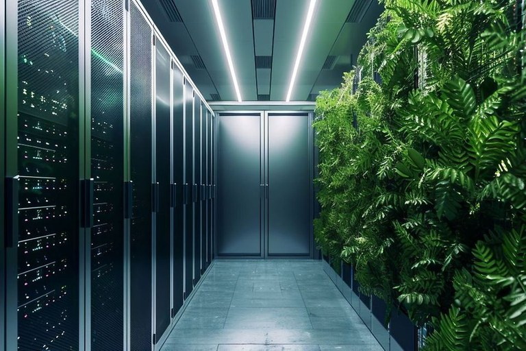

Data Centers Verdes
Os Data Centers Verdes são centros de processamento de dados projetados para minimizar o impacto ambiental e maximizar a eficiência energética. Eles utilizam tecnologias sustentáveis, como sistemas de refrigeração inteligente, energia proveniente de fontes renováveis e equipamentos de alto desempenho com baixo consumo elétrico. Além disso, práticas como a virtualização e o reaproveitamento de calor ajudam a reduzir o desperdício de recursos. Dessa forma, os Data Centers Verdes tornam-se fundamentais para uma infraestrutura tecnológica mais sustentável e responsável.
